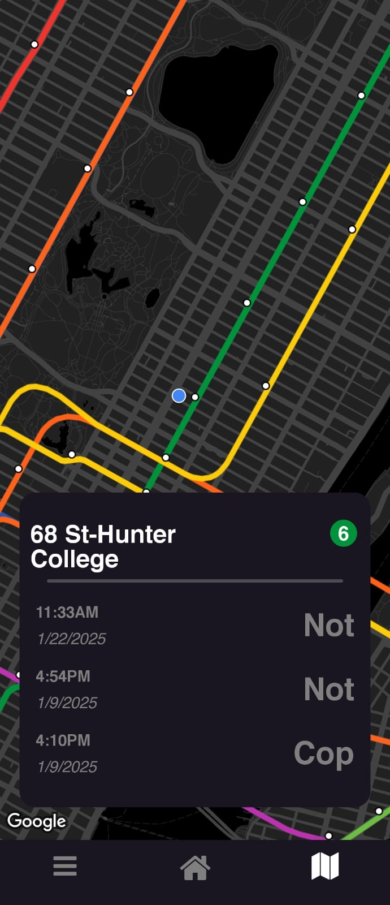
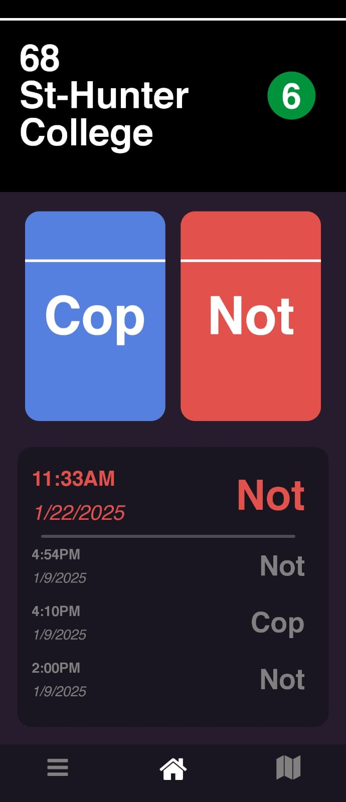
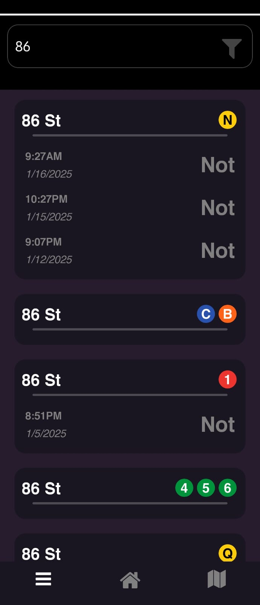

Tools Used/ BOM
- MongoDB for the station/report database
- Express Js for API requests
- React Native with Expo to construct the frontend
- Node.js for server-side logic
- Render for backend hosting
- Expo EAS for frontend hosting
- MTA Open Data for mapping/station info
Overview
CopOrNot is a React Native application designed to crowdsource the reporting of law enforcement presence at public transportation stations. By leveraging real-time location tracking, the app offers users an efficient way to log and access reports, promoting transparency and awareness in public spaces. The app ensures a seamless and intuitive experience with dynamic updates and responsive design, making it user-friendly for anyone on the go.
Core Features
-

-
Real-Time Location Tracking
Automatically detects the user's location and identifies the nearest station using the Expo Location API.
-
Crowdsourced Reporting
Users can report the presence of law enforcement ("Cop") or its absence ("Not") at their current station with a single tap.

-
Dynamic Interface
The reporting buttons adapt dynamically to changes in the user's location or station, ensuring accuracy and ease of use.
-
Data Aggregation and Storage
Reports are sent to a backend server and stored in a MongoDB database, enabling centralized data collection and analysis.

-
Logs Section
Users can view recent reports, including timestamps, stations, and statuses, in an organized and accessible format.
-
Responsive and Minimalistic Design
Built with React Native, the app offers a clean and easy-to-navigate interface for a smooth user experience.